워드프로세서-2급(폐지) (2006-08-27 기출문제)
1과목: 워드프로세서 용어 및 기능
1. 다음 중에서 문단모양 기능에 해당하지 않는 것은?
- 장평
- 들여 쓰기
- 탭 설정
- 문단 설정
(정답률: 64%)

2. 다음 중 블록(Block) 지정에 대한 설명으로 옳지 않은 것은?
- 문단 내에서 마우스로 두 번 클릭하면 해당 문단을 블록으로 지정할 수 있다.
- 원하는 특정 영역에서만 명령을 수행하도록 하기 위해 블록을 지정할 수 있다.
- 블록 지정을 이용하여 복사하거나 오려두기하는 작업은 클립보드가 사용된다.
- [Shift] 키와 방향키를 이용하여 블록 지정을 할 수 있다.
(정답률: 58%)
3. 다음 중 시스템 관련 프로그램, 글자폰트 데이터, 자가진단 프로그램 등이 저장된 대표적인 펌웨어(Firmware)로서 기억된 내용을 읽을 수만 있는 메모리는?
- 롬(ROM)
- 램(RAM)
- Cache Memory
- FAT(File Allocation Table)
(정답률: 70%)
4. 다음 중에서 토글 키가 아닌 것은?
- [Caps Lock]
- [Insert]
- [Scroll Lock]
- [Delete]
(정답률: 85%)
5. 다음 중 커서가 위치한 곳의 문자는 없어지면서 새로운 문자가 입력되는 상태로 적절하지 않은 것은?
- 삽입상태
- 오버라이트(Overwrite)
- 겹쳐쓰기
- 수정상태
(정답률: 67%)
6. 다음 중 단어와 단어 사이의 간격을 균등 배분함으로써 문서 전체 길이를 맞추고 균형을 유지하기 위한 기능은?
- 래그드(Ragged)
- 영문균등(Justification)
- 워드랩(Word Wrap)
- 소트(Sort)
(정답률: 81%)
7. 다음 중 키보드 키의 기능에 대한 설명으로 옳지 않은 것은?
- [Home] - 커서를 현재 행의 맨 처음으로 이동
- [End] - 커서를 문서의 맨 끝으로 이동
- [Page Up] - 커서를 한 화면 위로 이동
- [Page Down] - 커서를 한 화면 아래로 이동
(정답률: 78%)
8. 다음 보기의 내용에 적용되고 있는 정렬 방식은 무엇인가?
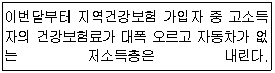
- 왼쪽정렬(왼쪽 맞춤)
- 오른쪽 정렬(오른쪽 맞춤)
- 양쪽 배분정렬(균등 분할 맞춤)
- 가운데 정렬(가운데 맞춤)
(정답률: 89%)
9. 다음 중 워드프로세서 용어에 대한 설명으로 옳지 않은 것은?
- 캡션(Caption) : 표나 그림에 제목이나 설명을 붙이는 기능
- 캡쳐(capture) : 화면상의 내용을 이미지 형태로 저장하는 기능
- 래그드(Ragged) : 문서의 오른쪽 끝이 정렬이 안된 상태
- 클립아트(Clip Art) : 클립보드와 동일한 의미로 사용되는 버퍼기능
(정답률: 75%)
10. 다음 중 트루타입(True Type) 글꼴에 대한 설명으로 옳지 않은 것은?
- 글자의 외곽선을 곡선으로 표현하여 확대해도 외곽선이 매끄럽다.
- 위지윅(WYSIWYG) 기능을 제공한다.
- 확대하면 외곽선이 계단모양으로 깨진다.
- Windows운영체제에서 기본적으로 제공되는 글꼴이다.
(정답률: 66%)
11. 다음 중 워드프로세서의 기능에 대한 설명으로 옳지 않은 것은?
- 수식 편집기를 이용하면 수학식이나 화학식을 쉽게 입력할 수 있다.
- 하이퍼텍스트(Hypertext)는 문서의 특정 단어 혹은 그림을 다른 곳의 내용과 연결시켜 주는 기능이다.
- 매크로(Macro) 기능을 이용하면 본문 파일의 내용은 같게 하고 수신인, 주소 등을 달리한 데이터 파일을 연결하여 여러 사람에게 보낼 초대장 등을 출력할 수 있다.
- 스타일(Style) 기능은 몇 가지의 표준적인 서식을 설정해 놓고 공통으로 사용되는 문단에 적응시킬 수 있는 기능이다.
(정답률: 74%)
12. 다음 중에서 문서의 특정 문자열을 복사할 때 사용하지 않는 기능은?
- 블록 이동하기
- 블록 복사하기
- 블록 붙이기
- 블록 설정하기
(정답률: 75%)
13. 공고문서의 경우에 특별한 규정이 있는 경우를 제외하고는 그 고시 또는 공고가 있은 후 며칠이 경과한 날로부터 효력을 발생하는가?
- 1일
- 3일
- 5일
- 7일
(정답률: 89%)
14. 다음 보기의 용어와 가장 관련이 깊은 기능은 무엇인가?
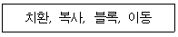
- 표시기능
- 저장기능
- 편집기능
- 인쇄기능
(정답률: 81%)
15. 다음 중 문서의 삽입, 삭제, 수정에 대한 설명으로 옳지 않은 것은?
- [삽입] 상태에서 새로운 내용을 입력하면 원래의 내용은 뒤로 밀려난다.
- 임의의 내용을 블록(영역) 지정한 후 [Delete] 키를 누르면 해당 내용이 삭제된다.
- ‘상공회의소’ 단어의 ‘회’ 자 앞에 커서를 두고 [Delete] 키를 한 번 누르면 ‘상공 의소’가 된다.
- 그림을 삭제할 때에도 지우고 싶은 그림을 선택한 후 [Delete] 키를 누른다.
(정답률: 74%)
16. 다음 중 지시문서에 해당하지 않는 것은?
- 훈령
- 예규
- 일일명령
- 부령
(정답률: 70%)
17. 다음 중에서 사무관리의 원칙이 아닌 것은?
- 신속성
- 용이성
- 경제성
- 전파성
(정답률: 88%)
18. 다음 중 수치데이터를 입력할 때 소수점을 중심으로 숫자의 위치를 자동적으로 맞추어주는 기능을 무엇이라고 하는가?
- 마진(Margin)
- 눈금자(Ruler)
- 워드 랩(Word Wrap)
- 데시멀 탭(Decimal Tab)
(정답률: 74%)
19. 다음 중 서로 상반되는 의미를 나타내는 교정부호끼리 짝지어진 것은?
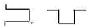
(정답률: 89%)
20. 다음 보기의 교정부호에 대하여 올바르게 교정된 결과는 어느 것인가?
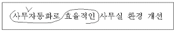
- 사무 자동화로 효율적인 사무실 환경 개선
- 효율적인 사무자동화로 사무실 환경 개선
- 효율적인 사무 자동화로 사무실 환경 개선
- 사무 자동화로 효율적인 사무실 환경 개선
(정답률: 93%)
2과목: PC 운영 체제
21. 한글 Windows XP에서 시스템을 강제로 종료시켜서 재부팅하는 경우에 발생할 수 있는 상황으로 옳은 것은?
- 작업 중이던 파일의 변경 내용을 잃어 버릴 수 있다.
- 작업 중이던 파일은 휴지통에 있으므로 복원하여 재사용할 수 있다.
- 운영체제 프로그램의 일부가 지워지므로 운영체제를 새로이 설치해야 한다.
- 재부팅을 하면 이전에 작업 중이던 응용 프로그램이 자동으로 시작된다.
(정답률: 68%)
22. 다음 한글 Windows XP 운영체제의 특징에 해당되지 않는 것은?
- 네트워크 기능 지원
- 최대 8자까지의 긴 파일 이름 지원
- MS-DOS창 실행 가능
- 플러그 앤 플레이 지원
(정답률: 73%)
23. 다음 중 한글 Windows XP에서 [Windows 탐색기]의 실행 방법으로 옳지 않은 것은?
- [시작] 단추에서 마우스 오른쪽 버튼을 누른 후 [탐색]을 선택한다.
- [시작]-[모든 프로그램]-[보조프로그램]-[Windows 탐색기]를 선택한다.
- [내 컴퓨터] 아이콘에서 마우스 오른쪽 버튼을 누른 후 [탐색]을 선택한다.
- [Ctrl] + [E] 키를 동시에 누르면 실행한다.
(정답률: 68%)
24. 한글 Windows XP에서 부팅할 때 표시되는 시작 옵션 중에서 VGA 모니터, microsoft 마우스 드라이버 및 Windows를 시작하는데 필요한 최소한의 장치 드라이버 등 기본 설정만 사용하고 네트워크 연결은 사용하지 않는 선택 항목은?
- 안전모드
- 부팅 로깅 사용
- VGA 모드 사용
- 디버그 모드
(정답률: 80%)
25. 다음 중 한글 Windows XP에서 [프린터 추가 마법사]를 실행하여 프린터를 설치할 경우에 첫 번째 단계의 작업은?
- 프린터의 제조업체와 모델명을 선택한다.
- 프린터에 사용할 포트를 선택하고 기본 프린터로 사용할지 설정한다.
- 설치할 프린터가 로컬 프린터인지 네트워크 프린터인지 선택한다.
- 시험 인쇄한다.
(정답률: 57%)
26. 한글 Windows XP의 폴더 창에서 사용할 수 있는 바로가기 키에 관한 설명으로 옳지 않은 것은?
- 열려진 창을 닫기 위해서는 [Esc] 키를 사용한다.
- 프로그램을 실행하거나 창을 열기 위해서는 원하는 폴더나 파일 위에서 [Enter] 키를 사용한다.
- 열려진 창이나 대화 상자의 항목 이동은 [Tab] 키를 사용한다.
- 열려진 창에 대하여 창 제어 메뉴를 보기 위해서는 [Alt] + [Spacebar] 키를 동시에 누른다.
(정답률: 49%)
27. 한글 Windows XP의 [제어판]에 있는 [프로그램 추가/제거]를 이용하여 Windows 구성 요소를 설치하려고 할 때 옳지 않은 것은?
- Windows 구성 요소로는 관리 및 모니터링 도구, 보조 프로그램 및 유틸리티 등이 있다.
- Windows 구성 요소는 부분적인 기능을 선택하기 위해 [자세히]를 사용한다.
- Windows 구성 요소를 추가할 경우에는 Windows XP 설치 CD가 있어야 한다.
- Windows 구성 요소를 설치하고자 할 때는 해당 항목에 체크 표시를 지우고 [다음] 단추를 클릭한다.
(정답률: 50%)
28. 다음 중 한글 Windows XP에서 사용하는 마우스 포인터에 대한 설명으로 옳지 않은 것은?
- : 특정 개체를 선택할 수 있는 상태이다.
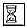
: 특정 작업을 수행중인 상태이다.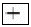
: 특정 개체의 크기를 상하로 조절하는 상태이다.- : 특정 개체의 크기를 대각 방향으로 조절하는 상태이다.
(정답률: 82%)
29. 한글 Windows XP에서 사용자가 모니터의 해상도를 변경하고자 할 경우에 [디스플레이 등록정보] 창에서 선택하여야 하는 탭은?
- 배경 화면
- 화면 보호기
- 화면 배색
- 설정
(정답률: 63%)
30. 다음 중 한글 Windows XP에서 새로운 폴더를 만드는 방법으로 옳은 것은?
- [탐색기]에서 [편집]-[새로 만들기]-[폴더]를 선택한다.
- [탐색기]에서 [보기]-[새로 만들기]-[폴더]를 선택한다.
- 해당 폴더창에서 제목 표시줄의 바로가기 메뉴에서 [새로 만들기]-[폴더]를 선택한다.
- [탐색기]의 오른쪽에 있는 내용 창에서 빈 공간의 바로 가기 메뉴에서 [새로 만들기]-[폴더]를 선택한다.
(정답률: 45%)
31. 한글 Windows XP에서 C:\Windows 폴더 창에서 다음과 같이 여러 개의 파일을 선택하고자 할 경우에 올바른 것은?
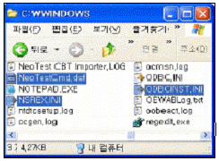
- 마우스로 드래그하여 사각형 안에 파일을 포함시킨다.
- 처음 파일 선택 후 [Ctrl] 키를 누른 상태에서 마지막 파일을 클릭한다.
- [Ctrl] 키를 누른 상태에서 해당 하는 파일을 하나씩 클릭하여 선택한다.
- 처음 파일 선택 후 마지막 파일에서 [Alt] 키를 누른 채 클릭한다.
(정답률: 85%)
32. 한글 Windows XP에서 다중 작업이라고도 하며, 하나의 컴퓨터에서 복수의 작업을 처리하는 것을 무엇이라고 하는가?
- Process
- Plug and Play
- Multi-Tasking
- GUI
(정답률: 63%)
33. 다음 중 한글 Windows XP에서 네트워크 사용을 위한 하드웨어는?
- 방화벽
- 프로토콜
- 서비스
- 네트워크 어댑터
(정답률: 64%)
34. 한글 Windows XP의 [보조 프로그램]에 있는 [메모장] 프로그램에 관한 설명으로 옳지 않은 것은?(문제오류로 실제 시험장에서는 모두 정답처리 하였습니다. 여기서는 1번을 정답 처리 합니다.)
- 시간과 날짜를 문서의 끝에 자동적으로 추가되도록 하려면 문서의 첫 행 왼쪽에 .LOG라고 입력한다.
- 크기가 1MByte 이하인 문서의 파일을 작성하고 편집할 수 있다.
- 특정 문자열을 찾아주는 기능이 있다.
- 메모장에서 여백, 머리글, 바닥글 등을 지정, 변경할 수 있다.
(정답률: 74%)
35. 다음 중 한글 Windows XP의 작업 표시줄에 나타낼 수 없는 도구 모음은?
- 바탕 화면
- 주소
- 휴지통
- 빠른 실행
(정답률: 60%)
36. 한글 Windows XP에서 사용할 수 있는 파일 이름의 최대 길이(Byte)는?
- 8
- 127
- 255
- 511
(정답률: 83%)
37. 다음 중 한글 Windows XP에서 [Windows 탐색기] 창의 상태 표시줄에 표시될 수 있는 내용이 아닌 것은?
- 오른쪽의 작업 목록 창 내의 개체 수
- 왼쪽 폴더 창 내의 선택한 폴더의 최후 변경 시간
- 선택된 개체의 크기
- 사용할 수 있는 디스크 공간
(정답률: 56%)
38. 한글 Windows XP에서 인터넷을 사용할 때 문자로 되어 있는 도메인 네임을 숫자로 구성된 IP 주소로 변경해 주는 시스템은?
- 기본 게이트웨이
- 기본 설정 DNS 서버
- 서브넷 마스크
- IP 주소
(정답률: 65%)
39. 다음 중 한글 Windows XP에서 보조기억장치인 하드디스크 드라이브 사용에 관한 설명으로 옳지 않은 것은?
- [디스크 조각 모음]을 사용하여 처리 속도를 향상시킬 수 있다.
- 하드디스크 드라이브의 바이러스를 제거하기 위하여 [디스크 검사]를 수행한다.
- 빠른 파일 검색을 위해 디스크 색인을 사용할 수 있다.
- [디스크 정리]를 사용하여 디스크 저장 공간을 늘릴 수 있다.
(정답률: 46%)
40. 한글 Windows XP의 [보조 프로그램]에 있는 [엔터테인먼트]에 관한 설명으로 옳은 것은 ?
- [볼륨 조절]을 선택하면 사운드의 볼륨 조절뿐 아니라, 음소거와 밸런스 조정이 가능하다.
- [녹음기]는 사운드를 저장만 할 수 있으며, 사운드의 재생은 [Windows Media Player]를 사용한다.
- [Windows Media Player]에서는 다양한 사운드 파일을 녹음, 재생, 편집할 수 있다.
- [녹음기]에서는 사운드를 mp3 형식의 파일로 저장한다.
(정답률: 42%)
3과목: PC 기본 상식
41. 다음 중 CD를 대체하여 대용량의 멀티미디어 데이터를 저장 할 수 있는 광디스크 저장매체를 무엇이라고 하는가?
- HDD
- VOD
- DVD
- ZIP DRIVE
(정답률: 71%)
42. 다음 중 최소한의 처리 성능, 메모리, 저장 장치만을 갖추고 있으며 데이터의 처리와 저장이 네트워크에 연결된 서버를 통해 이루어지는 컴퓨터를 무엇이라고 하는가?
- 마이크로 컴퓨터
- 워크스테이션
- 네트워크 컴퓨터
- 팜탑(Palmtop) 컴퓨터
(정답률: 65%)
43. 다음 중 PC 관리에 관한 설명으로 옳지 않은 것은?
- 중요한 자료는 반드시 별도의 기억매체에 백업해 둔다.
- 컴퓨터 성능 향상을 위해 주기적으로 디스크 조각모음을 실행한다.
- 정기적으로 최신 바이러스 검사 프로그램을 사용하여 바이러스 감염을 방지한다.
- 프로그램의 삭제는 해당 프로그램이 설치된 디렉토리를 삭제하면 된다.
(정답률: 69%)
44. 무료 배포되지만 기술적인 도움이나 설명서 혹은 업그레이드를 하여 지속적으로 사용하기 위해서는 금액을 지불해야 하는 저작권으로 보호되고 있는 소프트웨어를 무엇이라고 하는가?
- 프리웨어(Freeware)
- 셰어웨어(Shareware)
- 펌웨어(Firmware)
- 미들웨어(Middleware)
(정답률: 74%)
45. 다음 중 네트워크 보안을 강화하는 방법으로 가장 올바르지 않은 것은?
- 방화벽 설치
- 해킹
- 암호화
- 인트라넷
(정답률: 81%)
46. 다음 중 주기억장치에 대한 설명으로 옳지 않은 것은?
- 주기억장치에서 정보를 얻는데 걸리는 시간을 탐색시간(Seek Time)이라고 한다.
- 주기억장치를 한 번에 접근할 수 있는 정보의 단위는 보통 단어(워드)이다.
- 접근시간(Access Time)이 빠르다는 것은 그만큼 성능이 좋다는 의미이다.
- 일반적으로 주기억장치를 접근하기 위해서는 주소를 사용한다.
(정답률: 44%)
47. LAN과 외부 네트워크를 연결하는 장비로 다음의 설명에 해당되는 하드웨어는 ?
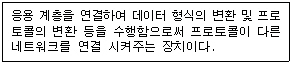
- 리피터(Repeater)
- 브리지(Bridge)
- 라우터(Router)
- 게이트웨이(Gateway)
(정답률: 57%)
48. 다음 중 USB에 대한 설명으로 옳지 않은 것은?
- USB지원 주변기기는 반드시 별도의 전원이 필요하다.
- 하나의 포트를 허브를 이용해서 여러 주변장치가 공유할 수 있다.
- 최대 127개의 주변장치를 연결할 수 있다.
- 12Mbyte의 데이터 전송속도를 지원한다.
(정답률: 60%)
49. 다음 중 멀티미디어 압축 기술이 아닌 것은?
- JPEG
- AVI
- MPEG
- TMP
(정답률: 58%)
50. 다음 보기의 내용은 전송 방향에 따른 여러 통신 방식 중에서 어느 방식을 설명한 것인가?
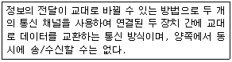
- 단방향(Simples) 통신 방식
- 반이중(Half Duplex) 통신 방식
- 전이중(Full Duplex) 통신 방식
- 이이중(Double Duplex) 통신 방식
(정답률: 60%)
51. 다음 중 초고속 정보통신망을 이용하여 원거리에 있는 사람들과 비디오와 오디오를 통해 회의할 수 있도록 하는 시스템을 무엇이라고 하는가?
- VOD
- RACS
- VCS
- VDT
(정답률: 65%)
52. 다음 중 최초의 상업용 전자계산기는 어느 것인가?
- ENIAC
- EDVAC
- UNIVAC-1
- IBM/370
(정답률: 53%)
53. 다음 중 멀티미디어 파일 형식에 대한 설명으로 옳지 않은 것은?
- JPEG는 동영상에 관한 멀티미디어 기술로써 주문형 비디오 서비스 등에 이용된다.
- GIF를 통해 움직이는 애니메이션 기능을 사용할 수 있다.
- 하이퍼텍스트는 링크 기능을 통해 원하는 정보로의 이동이 가능하도록 해주는 기능이다.
- MIDI를 통해 컴퓨터 음악을 만들 수 있다.
(정답률: 58%)
54. 다음 보기의 설명에서 ( ) 안에 공통적으로 들어갈 용어는?
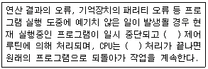
- 인버트(Invert)
- 인터럽트(Interrupt)
- 인터렉티브(Interactive)
- 인터페이스(Interface)
(정답률: 64%)
55. 다음 중 PC를 업그레이드 할 때 고려해야 할 사항으로 옳지 않은 것은?
- RAM의 경우 ns(속도 단위)의 값이 클수록 좋다.
- 하드디스크의 경우 GB(저장 용량)의 값이 클수록 좋다.
- CPU의 경우 Hz(속도 단위)의 값이 클수록 좋다.
- CD-ROM의 경우 배속(속도 단위)의 값이 클수록 좋다.
(정답률: 55%)
56. 다음 중 컴퓨터 범죄의 예방 방법으로 가장 적절하지 않은 것은?
- 서버를 운영하고 있는 경우에는 시스템 침입 방지를 위해 보안 시스템을 설치하고 고급 보안기술을 개발한다.
- 정기적으로 패스워드를 변경하여 사용한다.
- 바이러스 예방 프로그램을 설치하여 사용한다.
- 인터넷에서 무료로 제공되는 프로그램은 가급적 모두 설치하여 실행해 본다.
(정답률: 84%)
57. 다음 중 멀티미디어 데이터 입력장치가 아닌 것은?
- 스캐너
- 디지털 카메라
- 모니터
- 캠코더
(정답률: 72%)
58. 다음 중 주기억장치에 대한 설명으로 옳지 않은 것은?
- 주기억장치(DRAM)의 데이터 접근시간은 캐시 메모리보다 빠르다.
- 주기억장치의 각 위치는 주소에 의해서 표시된다.
- 중앙처리장치가 처리할 명령어와 이에 대한 처리 결과를 저장하는 장소이다.
- 주기억장치에는 쓰지 못하는 읽기 전용의 기억장치도 있다.
(정답률: 61%)
59. 다음 보기의 설명에서 ( ) 안에 들어갈 용어를 순서대로 올바르게 나열한 것은?
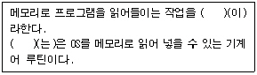
- 바이오스(BIOS) - 로딩(Loading)
- 로딩(Loading) - 부트스트랩(Bootstrap)
- 로딩(Loading) - 바이오스(BIOS)
- 바이오스(BIOS) - 부트스트랩(Bootstrap)
(정답률: 54%)
60. 다음 중 자원의 공유를 목적으로 회사, 학교, 연구소 등의 구내에 설치되어 있는 다수의 컴퓨터를 네트워크로 구성할 때 이용하는 정보통신망은 어느 것인가?
- VAN
- ISDN
- LAN
- WAN
(정답률: 78%)
장평은 문단의 너비를 일정하게 유지하는 것으로, 문단모양 기능과는 관련이 없습니다.
들여쓰기는 문단의 첫 줄을 들여쓰는 것이며, 탭 설정은 문단 내에서 특정 위치에 탭을 설정하는 것입니다. 문단 설정은 문단의 간격, 줄 간격, 정렬 등을 설정하는 것입니다. 이러한 기능들은 문단모양을 조절하는 데에 필수적인 기능입니다.